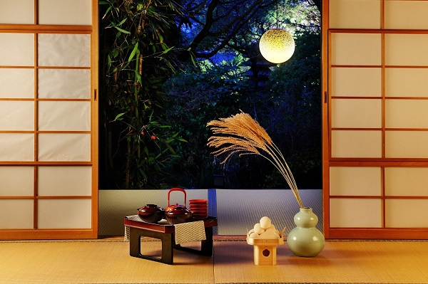

13/09/2024 285
Nhật Bản là một trong những quốc gia thuộc nền văn hóa Á Đông. Nên người Nhật cũng có tục lệ cúng trăng vào mùa thu, hay còn gọi là Tết Trung thu. Tuy nhiên, cách người dân “xứ sở hoa anh đào” đón Trung thu lại vô cùng độc đáo. Vậy Tết Trung thu Nhật Bản có gì đặc biệt? Bạn hãy tham khảo qua bài viết dưới đây để biết thêm chi tiết nhé!
1. Nhật Bản có Trung thu không?
Câu trả lời là Có. Tết Trung thu của Nhật Bản có tên là Tsukimi hoặc Otsukimi (nghĩa là Lễ hội Ngắm trăng). Ngày lễ này được du nhập vào Nhật Bản từ hàng nghìn năm trước rồi truyền bá rộng rãi trên khắp nước Nhật. Hằng năm, ngoài ngày 15 tháng 8 (âm lịch), ngày lễ này còn diễn ra vào ngày 13 tháng 9 (âm lịch).
Người Nhật đón Tết Trung thu vào ngày trăng rằm tháng 8 và “trăng sau” 13/9 hằng năm.
2. Những điều thú vị về Tết Trung thu ở Nhật Bản
Tết Trung thu tại Nhật Bản thu hút nhiều du khách tham gia nhờ sở hữu những điều độc đáo sau:
2.1. Nguồn gốc và ý nghĩa ngày lễ Trung thu của Nhật Bản
Theo dân gian, Tsukimi hoặc Otsukimi bắt nguồn từ Tết Trung thu của Trung Quốc và được lưu truyền đến Nhật Bản vào thời kỳ Heian (794 - 1185). Ban đầu, Tsukimi hoặc Otsukimi chỉ dành cho hoàng gia và tầng lớp quý tộc, nhưng đến thời Edo (1603 - 1868) thì lễ hội đã được tổ chức rộng rãi, với ý nghĩa như lời tạ ơn và cầu xin thần linh mang đến những vụ mùa tươi tốt.
2.2. Tết Trung thu tổ chức 2 lần/năm
Tsukimi hoặc Otsukimi được tổ chức 2 lần trong 1 năm. Đây chính là điểm khác biệt lớn nhất của Tết Trung thu Nhật Bản so với các quốc gia khác. Theo đó, ngày lễ hội ngắm trăng đầu tiên được tổ chức vào ngày 15 tháng 8 (âm lịch). Sau đó một tháng, người Nhật sẽ tiếp tục tổ chức Tết Trung thu thứ 2 vào ngày 13 tháng 9 (âm lịch).
Nhật Bản có cách đón Trung thu riêng biệt này là do theo quan niệm dân gian, nếu chỉ ngắm trăng vào đêm 15 bạn sẽ gặp nhiều điều xui xẻo. Do đó, tục lệ đón Tsukimi hoặc Otsukimi diễn ra 2 lần/năm nhằm gặt hái được phúc lành và tránh tai ương.
2.3. Truyền thuyết thỏ ngọc giã bột làm bánh mochi trên cung trăng
Nếu trong văn hóa người Việt Nam, Trung thu gắn liền với hình ảnh chú Cuội, chị Hằng và Thỏ Ngọc cùng quây quần trên cung trăng, thì đối với người Nhật Bản, hình ảnh hiện lên khi nhìn vào mặt trăng chính là một chú thỏ đang giã bánh giầy.
Sự liên tưởng đáng yêu này xuất phát từ một câu chuyện kể về việc thượng đế hóa thân thành một ông lão ăn xin để thử thách 3 con vật là khỉ, cáo và thỏ. Trong khi khỉ trèo cây hái trái ngon, cáo trộm đồ cúng để tặng ông lão thì thỏ lại không có gì cả. Để có đồ ăn cho ông lão, thỏ đã hiến tặng chính mình bằng cách lao vào đống lửa. Cảm động trước tấm lòng này, thượng đế đã hồi sinh thỏ và cho nó sống tại cung trăng.
Còn vì sao lại giã bánh giầy thì có thể lý giải rằng, do trong tiếng Nhật từ “trăng rằm” được gọi là Mochiduki khá giống với chữ Mochitsuki tức “giã bánh giầy”, nên mới có sự liên tưởng thú vị này.
Tết Trung thu ở Nhật gắn liền với hình ảnh Thỏ Ngọc đang miệt mài bên chiếc cối làm nên món bánh Mochi.
3. Người Nhật Bản làm gì trong ngày Trung thu?
Để thưởng thức đêm Tết Trung thu (ngắm trăng Tsukimi hoặc Otsukimi) theo đúng kiểu Nhật, bạn hãy lưu lại các thông tin dưới đây:
3.1. Trang trí nhà cửa

Người dân ở “xứ sở hoa anh đào” thường trang trí nhà cửa bằng cỏ lau (Susuki) - một trong bảy loại cỏ nổi tiếng của mùa thu Nhật Bản. Bởi từ xưa, cỏ lau được xem là hiện thân của thần mặt Trăng, mang đến sự sung túc cho gia đình và giúp mùa vụ bội thu. Ngoài ra, người dân cũng cho rằng hình dáng chĩa nhọn của sợi cỏ lau còn có khả năng đuổi ma quỷ. Chính những ý nghĩa này mà nhiều người Nhật đã dùng cỏ lau để trang trí cửa nhà vào dịp Tết Trung thu.
3.2. Cúng trăng
Cúng trăng là một tục lệ truyền thống quan trọng trong ngày Tết Trung thu Nhật Bản. Theo đó, vào ngày 15/8 và ngày 13/9 âm lịch hằng năm, người Nhật sẽ xếp bánh Tsukimi Dango thành một chiếc tháp vững chãi, rồi đĩa bánh sẽ được đặt lên bàn bên cạnh bình cỏ lau. Sau đó, mâm cúng được mang ra giữa sân hay chỗ có ánh trăng sáng. Khi cúng xong, mọi người sẽ quây quần bên nhau ngắm trăng, ăn uống và trò chuyện.

Mâm cúng trăng rằm vào ngày Tết Trung thu tại Nhật Bản thường có bánh Dango và cỏ lau.
3.3. Ngắm trăng
“Thưởng trăng” cũng là một hoạt động không thể thiếu vào đêm Trung thu ở Nhật Bản. Theo đó, bạn có thể ngắm trăng trong phòng, trong vườn, ở hiên nhà hay bất kỳ nơi nào thoáng đãng có thể ngắm trăng thuận tiện nhất. Nếu chọn một nơi mà tầm nhìn bị che chắn thì sẽ không thưởng thức được đêm trăng đẹp một cách trọn vẹn được.
Ngoài ra, tại Nhật còn có một số địa điểm ngắm trăng “siêu” đẹp bạn có thể tham khảo như:
Khu vườn được biết đến là một trong những điểm ngắm trăng rằm tháng Tám ở Nhật đẹp nhất. Đến đây, bạn có thể đi dạo xung quanh khu vườn, tận hưởng bầu không khí thanh bình, ngắm nhìn ánh trăng thơ mộng và thưởng thức những màn trình diễn âm nhạc truyền thống thú vị.
-
Đài quan sát Sunshine 60 Observatory
Với tầng quan sát có độ cao 251m, Sunshine 60 hứa hẹn đem đến cho bạn những trải nghiệm tuyệt vời vào ngày rằm tháng 8 cùng bạn bè và người thân. Ngoài thưởng ngoạn cảnh trăng tròn lung linh, bạn còn có thể ngắm nhìn toàn cảnh thành phố Ikebukuro về đêm.
Vào mùa thu, đặc biệt là đêm Trung thu vườn Mejiro trở nên lung linh, huyền bí với những ánh đèn và lá phong đỏ tuyệt đẹp. Đến đây, du khách có thể ngắm trăng, nghe tiếng thác nước nhẹ nhàng và thưởng thức một ly trà ấm nóng.
4. Món ăn truyền thống Tết Trung thu Nhật Bản
Vào ngày rằm Trung thu Otsukimi, người Nhật vừa ngắm trăng vừa ăn bánh Tsukimi Dango - món bánh Trung thu mochi Nhật Bản có hình dạng hình cầu. Khi thưởng thức, bạn sẽ cảm nhận được vị ngọt của bánh với độ dai dai vừa phải. Bánh Trung thu Tsukimi Dango sẽ tăng thêm phần thơm ngon nếu được dùng kèm với trà hoặc cà phê.
Vào ngày rằm Trung thu, người Nhật thường ăn bánh Tsukimi Dango - bánh Trung thu Nhật Bản.
5. Tết Trung thu của Nhật Bản có gì khác Việt Nam?
Tuy đều có Tết Trung thu, nhưng cách tổ chức ăn mừng ở Nhật Bản lại khác lạ so với Việt Nam.